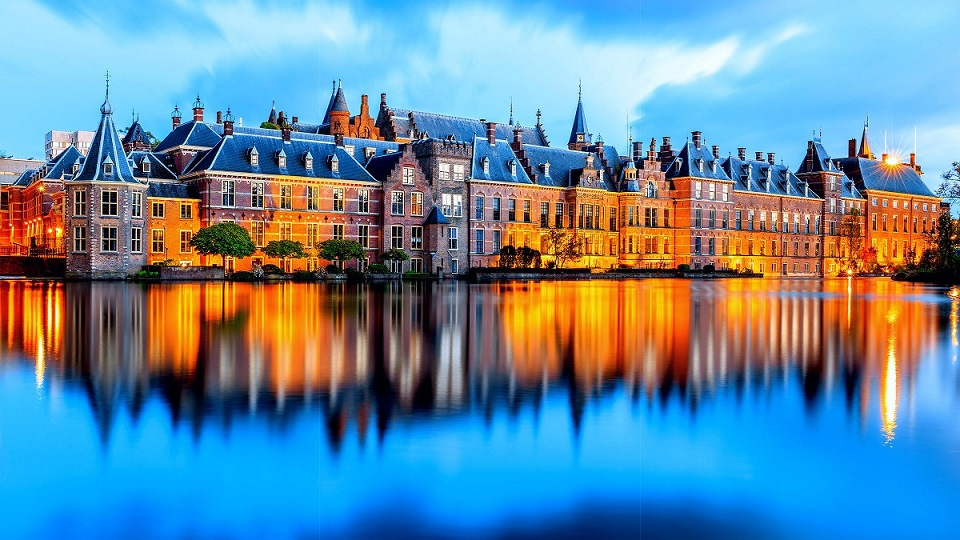

На востоке граничит с Германией, на юге - с Бельгией. На севере и западе омывается Северным морем. Нидерланды - равнинная страна ("нидерланд" - низкие земли), более 40% ее поверхности лежит ниже уровня моря (самая высокая точка страны - г. Ваалсерберх, 321 м, самая низкая - 6,7 м ниже уровня моря).
полностью лежат в зоне умеренного морского климата, разница между областями минимальна из-за небольших размеров и равнинного рельефа. Можно выделить лишь одну существенную особенность – чем ближе к морю, тем мягче климат, в удалённых же от него провинциях перепады между сезонами чувствуются сильнее. Лето жарким не назвать, но и зима довольно теплая, практически в любое время года часты дожди и ветрено – отсюда и обилие ветряных мельниц. Едва ли не половина Голландии располагается ниже уровня моря, здесь в Северное море впадают три крупные реки – Рейн, Шельда и Маас, из-за чего уровень влажности воздуха высок круглый год.
Традиционная голландская кухня cлавится своей "деревенской" основательностью, широким использованием малосочетаемых на первый взгляд продуктов, и превосходными традициями в приготовлении морепродуктов. Любимое блюдо - "харинг", т. е. особым способом приготовленная малосольная сельдь с ломтиком соленого огурца или луком. Также популярны обжаренное филе свежей сельди с луком, тушеный в духовке судак с овощами, копченый угорь с гарниром из яиц и лимона, свежее филе сельди - "мачьес", жаренные рыбные или мясные фрикадельки "крокеттен", а также многочисленные блюда из речной рыбы, креветок и моллюсков (по их потреблению страна занимает первое место в мире). К запеченным рыбным блюдам обычно подают листовой салат или картофельные брусочки-фри "потатен". В меню обычно много овощей и молочных продуктов. Кроме этого, к истинно голландским блюдам причисляют блины.
Как правило, путешествие в Нидерланды начинается со столицы государства — Амстердама. Главной достопримечательностью Нидерландов в столице являются многочисленные водные каналы Амстердама — всего их здесь более сотни. Множество рукотворных каналов вместе с сотнями замысловатых мостов и мостиков создают неповторимую картину города, делающую его узнаваемым среди тысяч других городов. Бродить по его бесконечным набережным можно часами, восхищаясь замысловатой архитектурой города. Вся система каналов Амстердама представляет собой комплекс водных путей, образованных одной большой рекой — Амстел. Создание этой системы началось ещё в 1658 году с «Плана трёх каналов», разработанного архитектором Хендриком ванн Кейскром. В наши дни численность каналов насчитывает уже 165 каналов, через которые проложено более полутора тысяч мостов. Если смотреть на панораму города сверху, все эти каналы образуют 4 полукольца, как бы «вложенных» друг в друга и опоясывающих город. Вследствие большой площади, которую занимают водоёмы, в городе предпочтителен водный вид транспорта, а для сухопутных путешествий распространены велосипеды, на которых удобно преодолевать многочисленные мосты. Поэтому, если вы ищете, что посмотреть в Нидерландах, то, оказавшись в Амстердаме, посетите одну из экскурсий по многочисленным каналам города.

В голландской провинции Гелдерланд есть что посмотреть в Нидерландах — национальный парк Де-Хоге-Велюве предлагает так много интересного, что подчас его посетителям не хватает и целого дня, чтобы обойти и изучить все его интересные места. Основатели этой известной достопримечательности Нидерландов, супружеская чета бизнесменов Крёллер, некогда использовали эти земли для охоты, но со временем финансовые сложности заставили их продать эти земли государству. Сегодня на площади около тысячи квадратных метров расположилось множество прогулочных маршрутов, конных и велодорожек, сад скульптур, ряд ресторанов и три уникальных музея. Так, в их числе — единственный в своём роде музей подземной жизни. Спускаясь всё ниже вглубь земли по его лестницам, можно встретить корневую систему старого дерева, возраст которого достигает полутора сотен лет, а также редкие горные породы и даже кости животных, вымерших более тысячи лет назад. Другой музей расположился в северной части парка — это охотничий домик Губертуса, который, согласно легенде, увидев светящийся крест на лбу оленя, отказался от привычки убивать животных и ушёл в монастырь. Пейзажи парка разнообразны — здесь чередуются влажные и сухие пустыни, заливные луга и песчаные наносы. Равнинная местность парка прекрасно подходит для велосипедных прогулок, тем более что парк предоставляет для этого специальные, фирменные белые велосипеды, которые легко регулируются по высоте и гарантируют комфортное путешествие. В парке также можно покататься верхом на лошади или даже совершить прогулку в настоящем конном экипаже.

В самом центре Гааги расположился удивительно красивый, старинный замок, по праву ставший одной из самых роскошных достопримечательностей Нидерландов. Строгость и одновременно утончённость его форм, в сочетании с водами озера, на берегу которого он расположен, оставляет сильное и яркое эстетическое впечатление. Если вы остановились в одном из отелей Гааги, вам однозначно найдётся что посетить в Нидерландах, ведь вам обязательно предложат экскурсию в Бинненхоф. Бинненхоф, основанный в 1247 году как охотничий замок, сегодня представляет собой систему уникальных зданий и сооружений, оформленных в изящном средневековом стиле. Риддерзаал — здание в готическом стиле, отличающееся необычным по форме треугольным фасадами и украшенное двумя башнями. Башня Торентье — 8-угольная башня, выполняющая роль резиденции премьер-министра, куда можно попасть через гренадерские ворота; Пруд Хоффейвер — дворцовый пруд во внутреннем дворике, созданный ещё в 1350 году; Фонтан Вильгельма II – фонтан перед рыцарским залом, созданный в 1885 году по проекту архитектора Кёйперса.
Одна из старейших достопримечательностей Нидерландов расположилась в древнем голландском городе — Делфте. Старинное здание ратуши, возведённое в юго-западной части Рыночной площади в 17 веке, стало эталоном стиля голландского ренессанса. Оно также включило в себя старую тюремную башню, возведённую примерно в 1300 году. Эта башня, чудом сохранившись даже после страшного пожара 1536 года, дожила до наших дней, и сегодня считается старейшей сохранившейся постройкой в городе. В 16 веке башня была украшена часами, четыре циферблата которых смотрели на разные стороны света. Первоначально здание мэрии было отстроено ещё в начале 13 века, но позже, на протяжении веков, оно неоднократно изменялось и подлежало восстановлению. Так, например, здание было уничтожено в результате пожара 1618 года, а потом было практически заново отстроено на старом фундаменте к 1620 году по проекту голландского архитектора Хендрика де Кейзера. В течение долгого времени вид здания менялся, и лишь к 20 веку полностью восстановлен первоначальный его архитектурный стиль, присущий эпохе Возрождения. В здании мэрии сохранились портреты принцев Оранских-Нассау, а также здесь располагается музей, посвящённый средневековым орудиям пыток. Своим внешним видом здание городской ратуши ярко выделяется на фоне однообразных кирпичных построек города, радует глаз старинный стиль оформления здания и изящество архитектурных форм.
Вверх